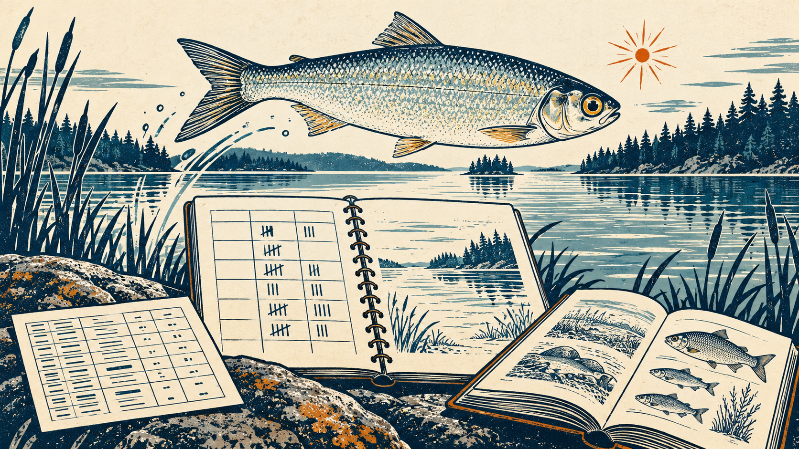

tidycreel is now on CRAN
Install the release and find your way into the examples

tidycreel has been accepted and is now available on CRAN. The release is 8.0.0. I am pleased to see it reach this point, and grateful to everyone who has offered questions, corrections, and feedback along the way.
If you are new to the package, creel surveys combine angler counts and interviews to estimate fishing effort, catch, and harvest. tidycreel provides a tidy R workflow for survey design, data validation, estimation, and reporting, with the survey package supplying the design-based foundation.
Install tidycreel
You can now install the CRAN release using the usual R command:
install.packages("tidycreel")
library(tidycreel)As of October 10, the source package is available, while Windows and macOS binaries are not yet available. I expect those to appear within the next couple of days. If a binary is not yet available for your R installation, you can install the source release explicitly:
install.packages("tidycreel", type = "source")tidycreel itself has no compiled code. Dependencies installed from source may require build tools.
For the development version from GitHub, use pak:
install.packages("pak") # Once, if pak is not already installed
pak::pak("chrischizinski/tidycreel")Use the CRAN release for most analyses. Install from GitHub if you want to try the latest development changes.
Aerial surveys: Use the GitHub development version for catch, harvest, and release totals until 8.0.1 reaches CRAN. It fixes an underestimation issue in 8.0.0; non-aerial designs are unaffected (release notes).
Examples, methods, and vignettes
There are three places to go after installation, depending on what you want to work through:
- The blog series follows small examples from design objects and sampling calendars through roving interviews, linked tables, effort, catch, harvest, and release, and diagnostics.
- The companion book, Modern Creel Survey Analysis in R, develops the reasoning behind those workflows: sampling design, estimands, uncertainty, and interpretation. It remains a work in progress as the methods, examples, and package develop.
- The full vignette collection provides focused package walkthroughs. CRAN includes 24 vignettes, covering getting started, survey designs, interview estimation, incomplete trips, effort and catch calculations, variance methods, scheduling, visualization, and more. They are also available directly from the CRAN package page.
To browse the installed vignettes or open the getting-started guide in R:
browseVignettes("tidycreel")
vignette("tidycreel", package = "tidycreel")The online collection is useful with a GitHub installation too, since that installation does not build local vignettes by default. Recent blog examples identify the 7.0.0 release they used; this announcement marks the 8.0.0 release.
If you try tidycreel with your own creel data, I would like to hear where the data structures, diagnostics, or examples need more explanation. Questions are welcome in GitHub Discussions, and reproducible bug reports help through the issue tracker.